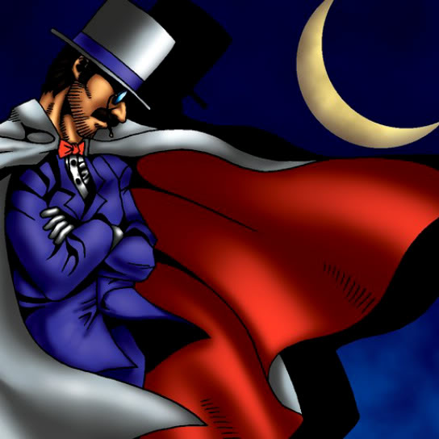

White Magical Hat

Description: "Able to move and attack without triggering an opponent's TRAP (LR)."
STATS
ATK: 1000
DEF: 700DECK COST
Deck Cost per Card: 22EFFECT NOT IMPLEMENTED
Fusion List (2 Possible Fusions)
- White Magical Hat + The 13th Grave = Magical Ghost
- White Magical Hat + Skull Servant = Magical Ghost